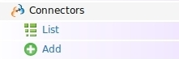
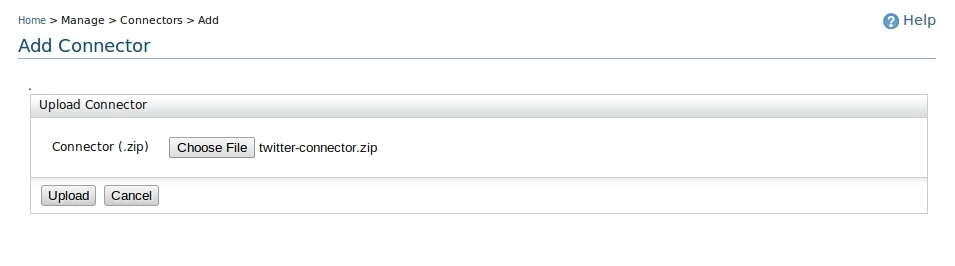
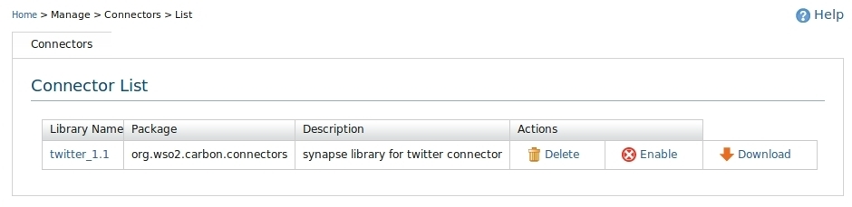
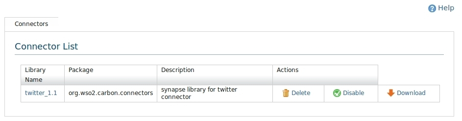

Figure 1:Connector main
Cloud Connector is a way to connect to an API which is provided by some third party. For example, we can write a cloud connector to connect to Twitter, Salesforce or Google Spreadsheet APIs from the WSO2 ESB.
To deploy a Connector, click Manage > Connectors > Add. Connectors can be can be uploaded using the following user interface. (Figure 2)

Figure 2: Uploading Connectors
After deploying a connector, to view the list of connectors click Manage > Connectors > List. Connector list would be as follows. (Figure 3)

Figure 3:Connector List
To undeploy a Connector installed, click Delete link in the connector list shown in the Figure 2.
Users can enable/disable the connector which allows to load the connector operations run time enable/disable capabilities. To enable a connector, click Manage > Connectors> List and in that interface (Figure 4) click Enable/Disable for a particular connector.

Figure 4:Connector List